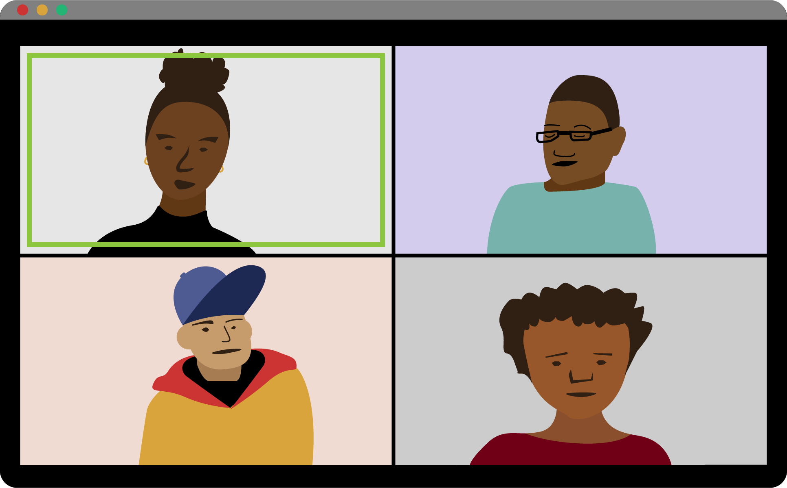

Changing the World With Pocket Change: One Leader Shares Her Story
Hello!
I’m Regina and I lead a youth nonprofit in Baton Rouge, Louisiana called Bloom. I recently read the Ms. Foundation for Women’s report called Pocket Change: How Women and Girls of Color Do More With Less.

Almost ¾ of the organizations interviewed for Pocket Change are “led” by WGOC. To meet criteria for the report, at least 75% of the leaders making financial decisions—whether staff or board members—are WGOC.
Organizations by and for WGOC are at work in every part of the United States, including Puerto Rico, Guam, the Northern Mariana Islands, and American Samoa.
I was shocked to learn how few dollars are invested in women and girls of color. Out of approximately $67 billion spent annually by foundations on grant making, only $356 million (half of 1%) goes to women and girls of color. That is $5.48 per person each year.
More than 60% of WGOC orgs report having collective leadership structures and about 50% of these also have an executive director.
More than 60% of WGOC orgs were founded in the last ten years.
I founded Bloom in 2014 with three organizer colleagues soon after the police killing of 18 year-old Micheal Brown in Ferguson, Missouri. We were concerned about how state-sanctioned violence against girls and femme-identified youth was being overlooked at the time. In 2017, we gained 501(c)3 status and I became the executive director of Bloom. I started drawing a regular paycheck a year later.
More than ½ of WGOC orgs include trans women and trans girls while just under ½ explicitly include gender nonconforming people who do not identify as women or girls.
Bloom predominantly serves Black girls and femme-identified youth and 20% of folks in our programs identify in other ways. Our mission has expanded from responding to police brutality to amplifying the political voices of youth and training them to organize around issues impacting their lives.
Almost 90% of WGOC orgs work on three or more issues simultaneously, reflecting the diversity of issues impacting their lives.
WGOC orgs are more likely than non-WGOC orgs to work on issues of violence and safety, issues facing women in STEM professions, and issues related to health equity.
WGOC orgs use multiple strategies, including providing services, conducting policy advocacy, community organizing, providing leadership training and voter registration.
Bloom organizers co-create and participate in campaigns and activities that influence policies and laws in our state, addressing issues ranging from safety, criminalization and state-sanctioned violence, to wage equity, education and reproductive justice. Every year we do a voter registration drive. We provide child care for organizers who are parents.

With a complex strategy like ours it can be hard to identify funders who are interested in what Bloom is doing. This is a very typical challenge for WGOC organizations.
1 in 3 WGOC orgs said they use 5 or more strategies to achieve their purpose, compared to fewer than 1 in 10 using a single strategy.
Donors tend to fund a discrete issue, strategy, or population but WGOC orgs use multiple strategies to address multiple issues impacting multiple populations.
46% of WGOC leaders say they struggle to secure funding because foundations do not fund all of the program strategies most typical for WGOC organizations.

Something that really stood out to me is that grant dollars are not allocated evenly. Only $2.36 of annual philanthropic grant dollars is invested each WGOC in the South, while WGOC in the Northeast receive $10.31. Where my organization is located seems to be a real factor in how much funding we receive. Organizations in many states are reporting no foundation funding at all!

In the early years, limited funding had a real impact on my leadership and Bloom’s existence. For the first two years, we had no grant funding and no paid staff. We raised just enough money from small community events to pay for rent, basic program supplies and gas. We did not have resources to focus on formal fundraising or developing relationships with potential major donors. We just had to make it work.
Nearly 1 in every 3 WGOC organizations have budgets under $50,000. Only 6.3% of these organizations have paid staff.
Less than 2% of WGOC organizations have budgets equal or greater than $5 million.
Higher percentages of WGOC beneficiaries correlates with lower funding levels.
Bloom’s first grant was a $15,000 government grant that funded a summer youth outreach program. After that I secured a couple one-time grants of $5,000 to $10,000 -- not enough to really make ends meet. Like almost every WGOC leader, I tried hard to get grants. I learned quickly that finding opportunities that sounded like they were actually intended for an organization like Bloom was a real challenge. I feel like I wasted a lot of time.
Grants made to WGOC organizations are $15,000 on average, less than half the amount of the overall median grant size of $35,000.
53.4% of WGOC leaders report that grant opportunities do not include the populations or groups they work with. While donors and funders may be interested in funding women and girls of color, this intention is not publicly announced by most.
Things got better for Bloom when we received a two-year $50,000 general operating grant from the Ms. Foundation for Women. That steady, trust-based commitment to funding our operation with unrestricted dollars was breathing room to stabilize and grow. Because of the way Ms. Foundation funded and supported our work, Bloom went from a budget of less than $50,000 to a budget of $140,000 in three years.
The Ms. Foundation for Women is committed to providing multi-year, general operating (unrestricted) support to grantees. The Ms. Foundation also offers technical assistance and other resources to build long-term capacity and sustainability, such as funds to convene with other leaders in the regional ecosystem in order to work on shared strategies or heal rifts and deepen relationships.
Some years are harder than others at Bloom. When the coronavirus pandemic hit in 2020, we switched gears and pooled resources with other local groups to meet our communities’ basic needs.
I worry a lot about the constant stress on my team. I wish Bloom could afford better health insurance. I worry about what would happen if I got seriously ill or had to stop working for some other reason. I’m afraid one of my paid team members will leave for a higher-paying job. Bottom line, I need to focus on long-term sustainability at Bloom.
WGOC orgs like Bloom and leaders like me need funding that will offer us the space to breathe, heal, gather and grow. We cannot continue to operate on fumes. . . or pocket change. We need supporters to join us in the difficult work of transforming this society into one in which WGOC can bloom and thrive! Thank you for taking the time to get to know about our work.